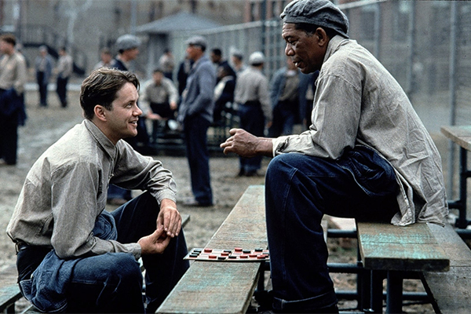

In the end, The Shawshank Redemption does what any movie should do: make its audience emotionally invested in the story all the while having some beautiful themes underneath the surface. Naturally, it gets an A+. It’ll bring a smile to your face, and that’s more than a lot of movies can say these days. It’s certainly worth a top spot on the IMDB Top 250 list.
